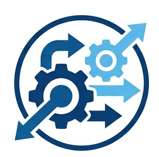

Développement Full Stack
ous maîtrisez déjà les bases du développement Web, SQL ou Python ? Ce Bachelor vous propulse vers le développement d’APIs dopées à l’IA générative, la mise en conteneur Docker / Kubernetes, et les pipelines CI/CD. En une année d’alternance, vous déployez des micro-services LangChain, entraînez vos modèles sur des jeux de données réels et automatisez la livraison en production.
Découvrir la formation
Cybersécurité & Réseaux
Le diplôme de Licence d'Informatique spécialisé en Cybersécurité est organisé autour d’une équipe pédagogique composée essentiellement de professionnels, qui offrent un savoir faire opérationnel et récent. Ils sont animés par une même vocation : faire partager la passion de leur métier dans les domaines du développement informatique et de la sécurité matérielle et logicielle en informatique.
Découvrir la formation
Intelligence Artificielle & Data
Le diplôme de Manager en Ingénierie Informatique (M2I) avec l'expertise "Intelligence Artificielle et Data" est organisé autour d’une équipe pédagogique composée essentiellement de professionnels, qui offrent un savoir faire opérationnel et récent. Ils sont animés par une même vocation : faire partager la passion de leur métier dans les domaines de l'intelligence artificielle, de la Data et de la conduite de projets .
Découvrir la formation